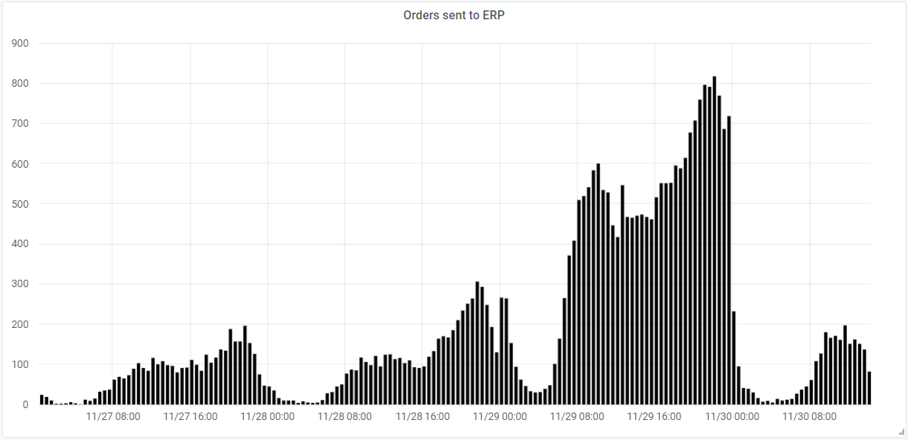
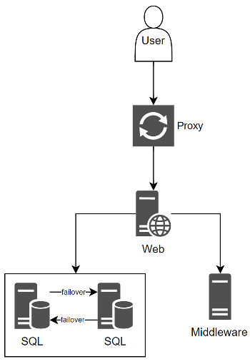
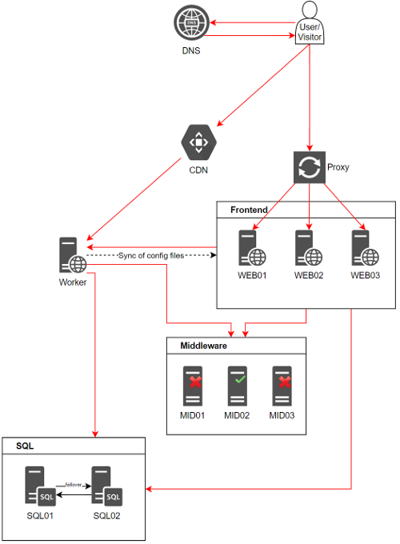

So the famous day has come yet again and I have to admit - I have never actually worked with a project that should perform for Black Friday sales. I was told that it was a big thing with a lot of money in play - but personally I'm not a huge fan of all this spending. Non the less, lets start this small story of bad vibes, great visions, bad start and a great ending.

The graph display the orders created from Thursday till mid Saturday withe big Black Friday in the middle. So this were actually a big deal for a lot of people - not just our customer.
Teasers:
Spoiler alert - a lot of semi old references to random things hides in this wall of text.
This story is all about a relative large commerce system that was minded on only one company with a handful of different brands that sold physical products. No developer in our team had been a part of the initial development team. It was one of those projects that had changed development teams a few times, with no documentation, no hand-off meetings or any thing. You could open a file in source control and based on the indentation of the code could define the time and team that had developed it. It was a patchwork of code with very different styles. It were gonna be a challenge.
The sites initial state were not gonna withstand a Black Friday of any kind. The site were pretty neat designed and used a lot of graphical material to sell the products, tons of content images, product images, icons, static logos - the user should see and almost feel what they were going to buy. It were a pretty neat site to visit - I think I spend hours just exploring all the different products that could be a part of my home.
On the technical part, the infrastructure were pretty simple. The user got routed through a proxy to access the web-server that communicated with a SQL "cluster" and a middleware-server dealing with hosting of distributed cache, queue, search indexes and a few other things.

These servers were not small because of prior Black Friday experiences. These servers had a lot of capacity. Fun fact is that the SQL server got so mis-used that they had to add an additional server to have something to fail over to when the master went down... The idea were that scaling up were easier than scaling out.
One of the things I remember from other optimization tasks on different projects are this:
Create a baseline, else you cant track your performance progression
So that is what we did. We could actually conclude that if all visitors just stayed on the front-page, ignored the bad response time (sometimes with an average around 20.000 ms), then we would be able to handle two thirds of our goal. And if you have customers willing to pay for this performance and still smile, you have found yourself a unicorn.
This were not good at all, but numbers don't lie. So the next thing were to get an idea on what is currently happening on the web-server that bogs down the actual CPU dependent requests.
The web-server were a janitor or a wizard. It were responsible for anything, everything, something. Basically it had to deal with all aspects of rendering the content to the user on the different sites. These were just some of the different tasks it should do:
It had to do it all, and then some (I didn't even map all its responsibilities). But this were one of the things that needed to change - it should only be responsible for serving calculated requests to the client. Not dealing with tons of stuff that takes resources away from serving the visitor.
Well... defining goal in co-op with the customer can be difficult. One is talking concurrent users, and another is talking about page visits per hour.
So someone told us to use a stress-test tool where one hit/sec could be translated to 100 concurrent users defined by Google Analytics.
For starters we could produce 20 hits/sec resulting in 2000 users that will get rendered the frontpage within 20.000 ms. The goal were a bit strangely defined. We had to be able to reach 350.000 page views per hour, which is 97 hits/sec. If we could do that we would be able to handle twice the amount of the prior Black Friday.
Love marketing people define the goals.
So we have to produce five time the amount of hits/sec, and get the response time down to below 200 ms. server-side.
Yep - reference to Warcraft... But as the headline states we needed to remove a lot of this work that the web-server were responsible for. This is not saying that the work weren't important, but it just had to go away from the web-server so it could deal with the visitors of the website.
To get here we had to get some data that supported our decision regarding getting a new server. To do this we installed a small monitoring tool that could generate graphs regarding resource usage when the product import flow ran. And OMG, everything almost came to a halt when it ran. It would bring the site to a almost halt every hour when it executed its eight separate applications. This was going on while the server still needed to support the visitors with responses to their requests. Not gonna happen.
Now the data were in place, then we could order a new server that could take care of all the important stuff like dealing with callbacks from payment providers, sending orders to the ERP system, handling the product import flow etc. This site were the administration server, responsible for the heart of the business - If this went down we had a totally different problem. But by introducing this, the web-server could go down and we would still be able to get the callbacks from the payment gateway and push it to the ERP system.
This removed some of all the spikes going on from time to time regarding the web-servers resources. But it does not stop here. Because like every other story or adventure, everything escalated when we performed the migration to the new server. Apparently the product import flow generated configuration files that needed to be on the web-server, if not updated it would show old data to the visitors with old prices etc. The customer sort of defined this as a no-go and a big problem. So we had to check our possible solutions: introducing a central configuration store, re-writing the websites to access a network share to get the file, or make a distributed filesystem (DFS) solution? So at that moment we didn't really have time to do anything, so it had to be the solution that required the least amount of non-existing time. Lets do a DFS for sharing the configuration files.
We sent a main to the hosting company that defined that it was not gonna be possible, but we could get a file-share - which would have resulting in a lot of rewriting and testing. So a Windows DFS were not possible. Screw it - do a RoboCopy implementation that runs at a scheduled interval - and done. The configuration files got updated on the web-server when the product import had run
Don't deny the easy solutions when there isn't time to do the 100% correct one.
While having somewhat an idea of the infrastructure, we had to move on to figure out why the server still used from 50-75% of CPU without having that many visitors.
But I needed to get a deeper understanding of what were having the most impact on it, so why not just access the site and open the development-tool in the browser to poke a bit around to find the low hanging fruits.
My initial take on this task were represented in the following number:
32 Mb resources
I was almost in some sort of shock - this were the same amount as 10 MP3 songs (yes I'm old - from the old MP3 generation). Its almost an entire album just downloaded just by accessing the front-page. Admitted that the page contained a lot of pretty images that slowly loaded as my computer got to download them - but still.
This were the first thing that needs to change. So we have to deal with the amount of requests for images and medias the web-server servers to the client browser, along with finding someway to save some network to the rest of the visitors. We were literally talking about millions of requests to images of the size of 150kB each over the network - no wonder the server were having a bad time.
It resulted in a multiple step task. First I needed to track what sort of images there were used and why they needed to be this big to do the job. It seemed that the customer exported all images to a PNG format with a very good quality and this could off-cause not change. This were pretty much stated by the customer. Then what do you do when you have to convince a customer that what they say is wrong and not doing any good for the site?
The result were to create a small page with three rows: one where the very big PNG image were displayed, another one where it where a JPEG, and the last containing the same JPEG but in 80% quality. I actually sent this sheet to the customer requiring them to tell me the difference, and they couldn't do that with the naked eye. So... Great, one human obstacle removed, and they started to use a proper format for web usage.
But we weren't done yet:
If you don't want to put hate on your own server - then pay some money to put the hate on someone else's servers
And that is what we suggested the customer. Just find your wallet and give us access to a CDN that can deal with all this stuff. I am not stating that this is the correct approach, but see it like CPR to stabilizing a system to something that seems a bit better.
For starters I had no idea of the gain we would get. My main focus were to remove the requests and free up the limited amount of bandwidth. What I didn't know were:
We were gaining so many things just by investing a bit of time and money in the CDN - and we could see it instantly on the web-server. It all went silent and only the requests that needed CPU rendering resources got displayed - not all the images and the heavy script files. 80-90% of all requests got cashed in the CDN, removing about 1TB of traffic from the network.
Just explain the customers the gain for their company and they will pay the cost. Have data ready for the customers to see to validate your performance gain.
The following meetings with the customer went a bit better when we had graphs and data that displayed the gain in performance just by adding a bit of expenses for the CDN.
So at this point in time we were already over some deadline I never really understood. So we needed to choose what to optimize - and here come the hard choice. Do you optimize code, do you try to scale up, or do you want to scale out?
These are all things I would preferred doing if we had the time - but as any other software project, we didn't have the time and had to show some end result to the customer. So we had to do scale... and this time we had to scale out, because it were physical servers and it already had to many hardware things stuck in the box.
This resulted in ordering of two new web-servers just as big as the first. 24 cores and 20 GB of RAM - each.
So we had the hardware, now we just have to take an existing website built on a old version of a CMS system without any updated documentation regarding configuration of it in a load-balanced environment. It's almost like it's my birthday - finally I could dig into some source code, and this time it were source code for a open source CMS system created by 20 different developers over time. This part I actually liked.
The good thing were, that making it load-balanced, just required it to have a set of standard Microsoft features enabled along with access to the database and done... Website running on three servers with auto updating its own content caches when editors publish new content.
Use CI/CD in some format. When thats running you should be able to configure new frontend web-servers within hours.
And... thats sort of a lie. Because we are dealing with a customer that likes images to create their content, and that is actually okay - but if you access the CMS administration directly through the proxy and uploads the images to a random web-server, then you are not guaranteed to hit that server when a client request the image for rendering.
So the task were defined, setup a dedicated content domain the editors can access on the worker server. Here they should upload the images. After that create a separate image domain site serving all these content images piped through the CDN to make sure it is cached properly. When that is done, we should just convert all the existing content data to reference the new domain - which were by the way stored in different formats... Happy times... SQL FTW...
So the former sections described some of the tasks currently into play. This had to be defined in some sort of diagram - a map to treasure island.

At this point in time I had worked for two weeks on a project I had no experience in, and already now it started to look a bit more serious than before. At this time we had reduced the response time on the website by 76% and could handle a lot more users at the same time.
A note to bear in mind is that to limit this story I needed to remove a lot of details regarding the implementation of the commerce solution - auto-generation and distribution of configuration files, just the fact that the solution integrated into around 15-20 external providers of different sorts along with hosting a SSO service. So what you see here is a limited view of the entire system... Sorry...
So imagine you have a plan that takes about three weeks. After that time you really want some sort of deploy and development freeze, just so you can observer how your changes act in production and potentially fix the issues if any.
Now imagine a plan where the customer removes a week from your original plan, keep adding new features (stuff that does not optimize performance - new stuff). They define your goals for you and says you should be done when used half the estimated time on cases.
Fair enough - when you do this to a software project, and the pressure is big enough you start cutting corners (which is also a bitch).
At that moment we have three web-servers, we can handle the hits/sec, but the response times sucks and we don't have time to do things right. Time to actually accessing the current source code and see what we can do.
Our approach were to look at the most popular endpoints that we knew were gonna be hit the most. This were a MVC solutions so we looked at the front-, product-, login-, and checkout-page. If that main flow were working we should be home safe. This were done on a very basic way by hooking a profiler to the website on a development computer and profile each of the many steps the execution went through. And boy I were surprised... again... When you run a website with a production configuration you would not expect it to execute the entire rendering method every time you call it. It should save it for just a little bit of time to save some CPU and other resources.
But no... no caching at all. It seemed that the output cache had been disabled. So every time a user on production rendered a product page we would render it from scratch, connecting to storage engines, external providers etc. to get the data needed. This had to stop.
At that exact moment we did that analysis, an email ticked in... The customer just sent a campaign offer to their entire email list and the site were starting to get more and more traffic. It were going down now. So the only meaningful thing that got to my mind were to enable output-caching directly on the production environment.
I admit - this is not something I would do without testing it in a proper QA environment - but with this project there were non.
So I did the thing that no developer should do - I changed the configuration directly on production without testing it first. The result were extreme, going from 80% CPU to below 20% instantly. The campaign went as the customer expected and a lot of orders were placed - hope they were happy.
After the campaign, I had to disable it again and test it locally to make sure that it didn't cache too much - and off-cause it did cache too much. But who needs to logout when your logged in, no need for that button. Jokes aside, things got fixed and the site now had an active output cache.
While we now had found one problem, we still needed to find out why a fail-over SQL database setup were needed. So by digging into the path of execution we saw a clear pattern of accessing data directly from the database, instead of accessing the already cached version of the static data. This were done on all pages, multiple times. By doing this more deep analysis we could limit the database acces by almost 95%, making the fail-over setup redundant.
Remember we were cutting corners here... So now we have activated output caching, caching entire pages in memory on each of the servers. Beside that we have content-editors changing content constantly and product data being updated randomly with price and stock status.
We were screwed because we were using a standard output cache provider storing it in memory, and we didn't have the time to implement invalidation endpoints so it would remove the cache item if the data got updated - or were we. The law forbid you to display a price that is not the same as the one added to the basket. So we had to define the time to live to something low so it invalidated it self within short time. That way it would "seem" real-time. Besides that, the basket service would not use cached content and use the actual prices along with doing a stock-check.
The proper thing could have been to implement a dual level output cache provider that used a distributed cache along with its own in-memory cache. Along with that it should be able to invalidate an output cache item based on the URL it would be accessed on. That way if a product update got in we could generate the product page URLs and invalidate the central cache. The web-servers would only store the output for one minute, after that it should check the central cache. If that were empty the specific server were responsible to generate the proper output cache item, store it locally and in the central cache.
All these things were the result of changing deadlines and missing time and proper environments to test it on. Our own QA environment consisted of a single server shared with a handful of other customers solutions - we could not test infrastructural changes.
If you cut corners, make sure to get the time to revisit the code, fix the hacks and clean up the code
So what to conclude? Measure, monitor, change, and then repeat the entire thing. Someone said that before. These steps has been central along with having a specific goal to achieve - then you know when you are somewhat done. Don't be afraid to crash you site, as long as you learn something new that you then can optimize and change.
By going through this flow constantly you have something to show the customer when they ask about a status on the optimization. This approach helped us so much that we concluded internally that we could have gone through Black Friday with one web-server and still be able to bring the customer 60% more revenue (approx $3.8 mil.) during the 24 hours of Black Friday.